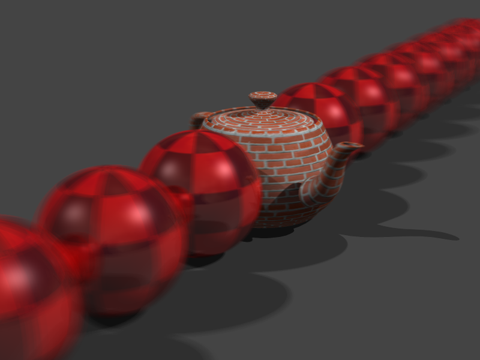
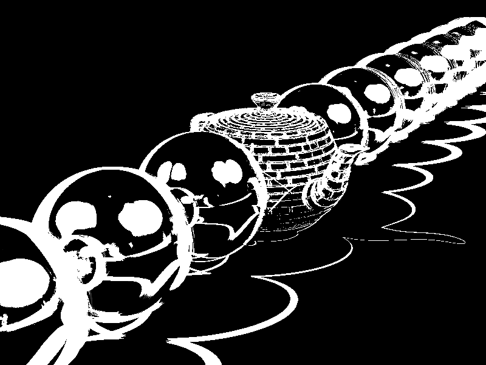

Project 9 - Depth of Field
Render time: (00h 00m 28s) Min:16 Max:32 Threshold: 0.0001, pseudo-random samples on Camera Lens
Render time: (00h 00m 30s) Min:16 Max:64 Threshold:0.0001, Halton sequence samples on Camera Lens
 Hardware : Core i7 - 2630QM (2.00GH)
Ram : 6GB